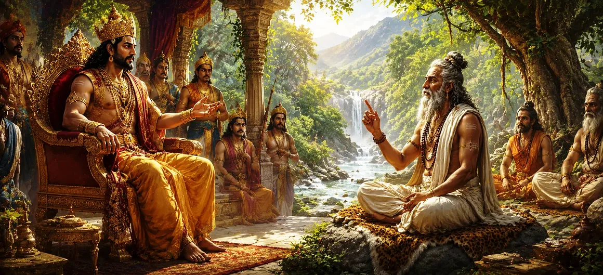

This chapter recounts the celebrated story of King Kṣuva and the sage Dadhīca. Their encounter became an important lesson on spiritual wisdom, devotion, and the limitations of worldly power. Through their dialogue and conflict, the Shiva Purana reveals that true greatness arises from spiritual realization rather than material authority or royal status.
King Kṣuva possessed great influence, wealth, and authority. Over time, he became increasingly proud of his position and began to regard worldly power as the highest achievement. This pride eventually led him into disagreement with the sage Dadhīca, whose life was devoted to spiritual truth.
Dadhīca was renowned for his spiritual knowledge and unwavering devotion. He understood that worldly achievements are temporary, while spiritual wisdom endures beyond the limits of time. Through calm reasoning and profound insight, he sought to guide the king toward a deeper understanding of reality.
The discussion between Kṣuva and Dadhīca centered on the question of what constitutes true greatness. The king valued political authority and influence, while the sage emphasized wisdom, self-control, and devotion to the Divine. Their debate highlighted the contrast between external power and inner realization.
As the discussion progressed, it became evident that spiritual knowledge surpasses worldly status. Dadhīca demonstrated that kingship, wealth, and fame are subject to change, whereas wisdom rooted in truth remains eternal. This teaching became the central message of the chapter.
True knowledge transcends worldly achievements and material success.
Worldly authority is temporary and cannot replace spiritual realization.
Humility opens the path to wisdom and deeper understanding.
Through the sage’s teachings, King Kṣuva gradually came to recognize the limitations of pride and worldly prestige. He began to understand that lasting fulfillment cannot be achieved through power alone but through wisdom and spiritual growth.
The story of Kṣuva and Dadhīca remains a timeless reminder that wisdom is greater than authority and that devotion is more valuable than pride. The chapter encourages seekers to pursue truth and self-realization rather than becoming attached to temporary worldly distinctions.
The story teaches that worldly success has value only when guided by wisdom and humility. Lasting greatness arises from inner realization, devotion, and alignment with eternal truth rather than external status or influence.
Throughout the sacred traditions, kings and rulers often sought guidance from enlightened sages. Dadhīca’s teachings demonstrated that spiritual insight can illuminate truths that worldly experience alone cannot reveal. His counsel served as a reminder that wisdom should guide power, not the other way around.
The story ultimately highlights that inner strength is greater than external authority. While kingdoms, wealth, and influence may rise and fall with time, qualities such as wisdom, devotion, and self-mastery remain enduring treasures. Through Dadhīca’s example, seekers learn that spiritual attainment is the highest form of victory.
"Wisdom endures where power fades."
Continue exploring the sacred events of Sati Khanda as the enlightening story of Kṣuva and Dadhīca reveals the supremacy of spiritual wisdom, leading into the remarkable battle involving Lord Viṣṇu and the great sage Dadhīca.